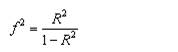
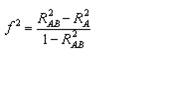

Introduction:
For linear models (e.g., multiple regression), the following functions are
used:
pwr.f2.test(u =, v = , f2 = , sig.level = , power = )
where u and v are the numerator and
denominator degrees of freedom. We use f2 as the effect size measure.


R2 = population squared multiple
correlation
R2A = variance
accounted for in the population by variable set A
R2AB = variance
accounted for in the population by variable set A and B together
The first formula is appropriate when we are
evaluating the impact of a set of predictors on an outcome.
The second formula is appropriate when we are
evaluating the impact of one set of predictors above and beyond a second set of
predictors (or covariates).
Cohen suggests f2 values of 0.02, 0.15, and
0.35 represent small, medium, and large effect sizes.